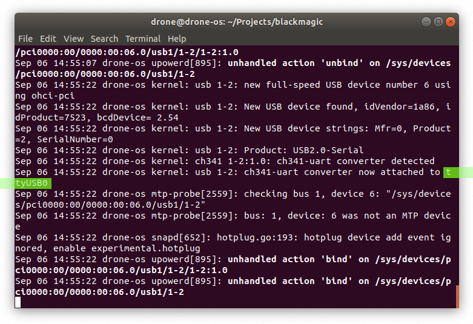
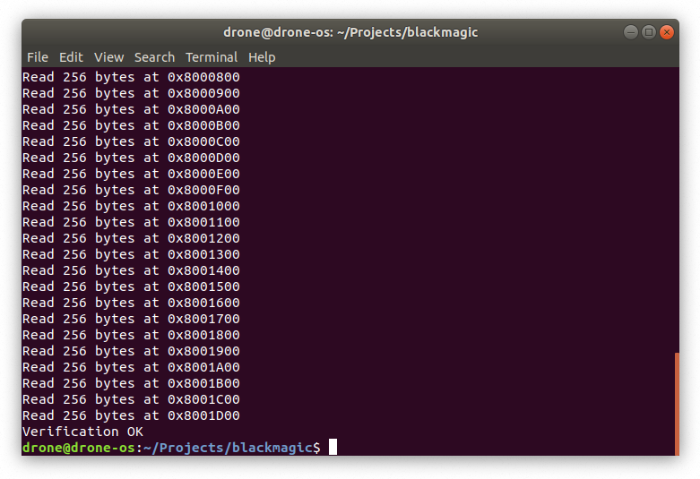
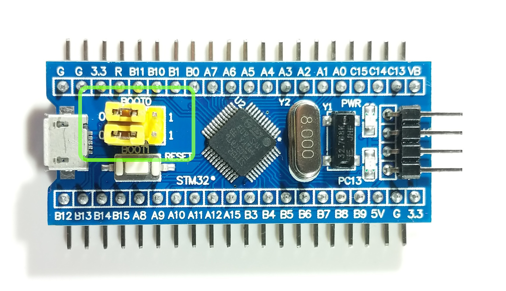
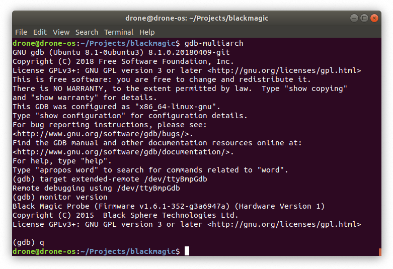
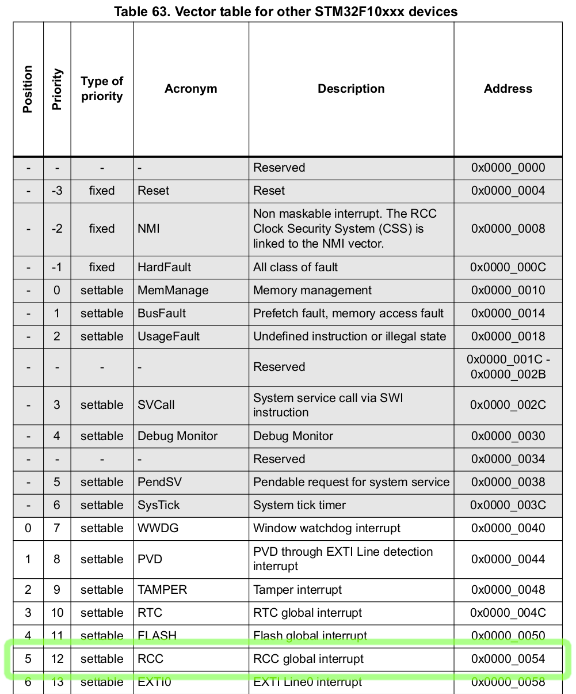
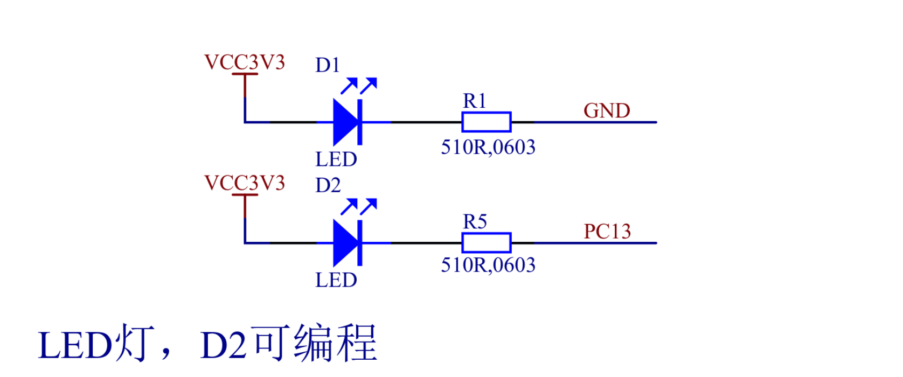

Introduction
Drone is an Embedded Operating System for writing real-time applications in Rust. It aims to bring modern development approaches without compromising performance into the world of embedded programming.
Supported hardware
Drone core is platform-agnostic from the beginning. However currently only ARM® Cortex®-M3/M4 is supported.
Drone also have special support for Black Magic Probe
in form of drone bmp commands. But it doesn't restrict you from using any
other debug probes.
Design principles
-
Energy effective from the start. Drone encourages interrupt-driven execution model.
-
Hard Real-Time. Drone relies on atomic operations instead of using critical sections.
-
Fully preemptive multi-tasking with strict priorities. A higher priority task takes precedence with minimal latency.
-
Highly concurrent. Multi-tasking in Drone is very cheap, and Rust ensures it is also safe.
-
Message passing concurrency. Drone ships with synchronization primitives out of the box.
-
Single stack by default. Drone concurrency primitives are essentially stack-less state machines. But stackful tasks are still supported.
-
Dynamic memory enabled. Drone lets you use convenient data structures like mutable strings or vectors while still staying deterministic and code efficient.
Why use Drone?
-
Async/await by default. Drone provides all required run-time to use native async/await syntax and execute
Futures. -
Doesn't require
unsafecode. In spite of the fact that Drone core inevitably relies onunsafecode, Drone applications can fully rely on the safe abstractions provided by Drone. -
Modern tooling. Apart from standard Rust tools like
cargopackage manager,rustfmtcode formatter,clippycode linter, Drone providesdronecommand-line utility which can generate a new Drone project for your hardware, or manage your debug probe. -
Primary stack is stack-overflow protected regardless of MMU/MPU presence. But secondary stackful tasks require MMU/MPU to ensure the safety.
-
Debug communication channels. Rust's
print!,eprint!and similar macros are mapped to Cortex-M's ITM channels 0 and 1 out of the box. Debug messages incur no overhead when no debug probe is connected. -
Drone.tomlconfiguration file, which saves you from manually writing linker scripts. -
Rich and safe zero-cost abstractions for memory-mapped registers. Drone automatically generates register bindings from vendor-provided SVD files. It also provides a way to write code generic over similar peripherals.
What Drone doesn't
-
Drone doesn't support loading dynamic applications. It is a library OS and is linked statically with its application.
-
Drone doesn't implement time-slicing. It has a different execution model, but optional time-slicing may be added in the future.
Getting Started
Unlike many other programming fields, software development for embedded systems requires special hardware. Bare minimum is a target device, for which the software is developed, and a debug probe that is responsible for programming and debugging the device. Often for a particular MCU, the vendor offers a development board, which incorporates an MCU, a debug probe, and some peripherals. But when the development reaches a PCB prototyping stage, an external probe is desirable. There are various debug probes in the market. A Chinese clone can cost a couple of dollars, while original probes often cost hundreds. But there is one unique option that is supported by Drone out-of-the-box - Black Magic Probe.
Black Magic Probe, or BMP, is an open-source tool, like Rust or Drone, which is invaluable when it comes to troubleshooting. Currently it supports Cortex-M and Cortex-A targets. BMP implements the GDB protocol directly, which is nice, because there is no need for intermediate software like OpenOCD. Also it embeds a USB-to-UART converter. The official hardware is sold around $60 and is quite good. But the firmware supports other hardware options. The most affordable of which is the Blue Pill.
Blue Pill is an ultra-popular and cheap development board for STM32F103C8T6 microcontroller. It can be bought for around $1.50 from AliExpress and also can be programmed with Drone. It has 32-bit Cortex-M3 core running at 72 Mhz max, 20 Kb of RAM, and 128 Kb of flash memory. This is good for many applications and is enough to get started with Drone. So the most affordable start would be with two Blue Pill boards, one as a debug probe and the other as the host for Drone projects.
But there is another tool needed to flash the BMP firmware to a Blue Pill - a USB-to-UART adapter. Out of the box a Blue Pill is flashed with a factory boot loader, which allows programming its flash memory through UART. The cheapest adapter would be enough for this. CH340G can be bought for around $0.50 from AliExpress. It will not be needed after initial bootstrap of BMP, because it has its own USB-to-UART. Though it is convenient to have a spare adapter, as sometimes there can be multiple UARTs involved.
Hardware
To make a start with Drone the most affordable, the following reference hardware was selected for this book:

- 2× STM32F103C8T6 development boards (Blue Pills)
- CH340G USB-TTL converter
- Female-to-female jumper wires
And optionally:
- 2× Angled 40-pins 2.54 mm header - Blue Pills already come with straight pin headers

Usually Blue Pills come with not soldered pin-headers, except the SWD header. If you don't want to solder, you can twist the wires like this:

Here are the Blue Pills soldered with the angled pin-headers:

In the next chapter we will show how to convert one of the Blue Pills to a Black Magic Proble.
Black Magic Probe from a Blue Pill
This chapter describes the process of making a Black Magic Probe from a Blue Pill board. The steps were tested on Ubuntu 18.04.3 LTS.
Preparation
The process requires the following packages to be installed:
$ sudo apt install build-essential \
curl \
dfu-util \
gcc-arm-none-eabi \
gdb-multiarch \
git \
python \
python-pip
It is convenient to join the dialout group. This way you will not need
super-user privileges to work with BMP and USB-to-UART adapter:
$ sudo adduser $(id -un) dialout
In order for the group change to take effect, you will need to re-login.
Get the stm32loader script and install its python dependencies:
$ git clone https://github.com/jsnyder/stm32loader
$ pip install pyserial
Get the BMP firmware:
$ git clone https://github.com/blacksphere/blackmagic
$ cd blackmagic
$ git submodule update --init --recursive
BMP repository provides udev rules for the probe. The rules instruct udev to
symlink the GDB endpoint to /dev/ttyBmpGdb and the UART to
/dev/ttyBmpTarg. Also they allow to upgrade BMP firmware without super-user
permissions.
$ sudo cp driver/99-blackmagic.rules /etc/udev/rules.d/
$ sudo udevadm control --reload-rules
Building
Correct probe host should be selected. In our case it's swlink.
$ make PROBE_HOST=swlink

This will produce two binaries we are interested in: src/blackmagic_dfu.bin
and src/blackmagic.bin. The first is a bootloader, which will be flashed with
the USB-to-UART adapter. And the second is the actual firmware, which will be
loaded through USB with help of the bootloader.
Flashing Bootloader
-
Connect the USB-to-UART adapter with the Blue Pill according to this table:
USB-to-UART Blue Pill GND GND RXD A9 TXD A10 Warning: Don't connect any power source now. We will power up the board through USB at the step 5. Using USB together with 5V or 3.3 pins can damage your board.
-
Set the jumper on the USB-to-UART adapter to the position where VCC and 3V3 are shorted. This will set the adapter's output voltage to 3.3 v. Although it is not strictly needed, because A9 and A10 pins are five-volt-tolerant.
-
Set BOOT0 jumper on the Blue Pill to 1 to boot into the factory programmed bootloader. The bootloader is responsible for programming the board through UART.

-
Before connecting the USB-to-UART adapter to your PC, open the system journal:
$ journalctl -fConnect the USB-to-UART adapter and notice the name it is assigned:

-
Connect a USB-cable to the Blue Pill and start the flashing process. Replace
/dev/ttyUSB0with your value from the previous step. If the process is not starting, press the reset button on the Blue Pill.$ ../stm32loader/stm32loader.py -p /dev/ttyUSB0 -e -w -v src/blackmagic_dfu.bin

- Set BOOT0 jumper on the Blue Pill back to 0.

Flashing Firmware
Now you can disconnect the USB-to-UART adapter from the Blue Pill and your PC. The firmware will be flashed through USB port:
$ dfu-util -d 1d50:6018,:6017 -s 0x08002000:leave -D src/blackmagic.bin

Now we will check that it works. Reconnect the Blue Pill and open a GDB session:
$ gdb-multiarch
At the GDB prompt enter the following commands:
target extended-remote /dev/ttyBmpGdb
monitor version

If your output is similar to the output above, congratulations! Now your Blue
Pill is a Black Magic Probe! Next time you need to upgrade the firmware you only
need to repeat the dfu-util command above.
Wiring
Here is a general pin-out description and an example connection with a Blue Pill:
| Black Magic Probe | Function | Blue Pill Target |
|---|---|---|
| GND | GND | GND |
| SWCLK | JTCK/SWCLK | SWCLK |
| SWIO | JTMS/SWDIO | SWIO |
| A15 | JTDI | |
| B3 | JTDO | |
| B4 | JNTRST | R |
| B6 | UART1 TX | |
| B7 | UART1 RX | B3 |
| A3 | UART2 RX (TRACESWO) |

Comparison with Official BMP

There are a few advantages of the official BMP:
- Has a Cortex Debug connector
- Can power the target
- Can sense the target's voltage
- Has more LEDs
- Has more robust circuitry
These advantages are not critical, however by buying the official hardware you are supporting the BMP project.
Hello, world!
In the previous chapter we created a debug probe from a Blue Pill, and attached it to another Blue Pill board. In this chapter we will run our first Drone program on the microcontroller.
Rust
If you haven't installed Rust yet, follow the instructions from rustup.rs. Drone currently available only for Nightly channel of Rust. You need to install it first:
$ rustup toolchain install nightly
just command
In embedded development often there are various project-specific tasks that are
needed to run from time to time. Therefore we encourage using an excellent Rust
crate just:
$ cargo +stable install just
Just is a command runner inspired by make. Whenever you see a project with
Justfile at the root, run just --list to see all available
commands. Furthermore drone new command will generate a Justfile for you. It
is advisable to put alias j="just" to your shell config, so you could just
type j instead of just.
drone command
The Drone OS project consists of many Rust crates. However there is a single
entry point for it - the drone command-line utility:
$ cargo +nightly install drone
For now you should have all prerequisites and could follow to the next step - generating your first Drone crate.
New project
Let's tell drone to generate a new Drone crate for us. We have to specify the
target MCU family, which is stm32f103 for Blue Pill, the flash memory size,
the RAM size, and the project name.
$ drone new --device stm32f103 --flash-size 128K --ram-size 20K hello-world
$ cd hello-world
The first thing to do inside the project is to install dependencies:
$ just deps
You should also run this task after each Rust update.
Now we assume you have the Blue Pills connected as follows (as described in the previous chapter):
Let's flash our newly created project to the target Blue Pill. If it have to be built first, it could take a while:
$ just flash
A successful result looks like this:

And finally, check the ITM output from the device.
$ just itm

If you see an output like above, congratulations! You have successfully set up an environment for developing Drone projects.
Blink an LED
In this section we will write an application that will raise the system clock frequency to 72 MHz and blink the on-board LED connected to the PC13 pin. The application will involve using multiple threads, futures, streams, memory-mapped registers, and peripherals.
The full code for this example can be found at Github.
Generate a project
To begin with, let's generate a new Drone project for a Blue Pill board:
$ drone new --device stm32f103 --flash-size 128K --ram-size 20K bluepill-blink
$ cd bluepill-blink
$ just deps
To briefly test the newly generated application, connect a Black Magic Probe to your PC, and a Blue Pill board to the BMP as in Hello, world! chapter. Flash the firmware and check the ITM output:
$ just flash
$ just itm
If you can see a "Hello, world!" message, follow to the next chapter.
Run at Full Speed
According to the datasheet, STM32F103 MCU can run at the maximum frequency of 72 MHz. But by default it runs at only 8 MHz. To achieve the full potential of the chip, the system frequency should be raised in the run-time.
There are three options for the system clock source:
-
HSI (High Speed Internal) - an RC oscillator running at constant 8 MHz and sitting inside the MCU chip. It is the default source for the system clock selected at the start-up.
-
HSE (High Speed External) - an optional external resonator component in the range from 4 to 16 MHz. A Blue Pill board has a 8 MHz crystal connected to the MCU (the component in a metal case right beside the MCU marked as Y2.)
-
PLL (Phase-Locked Loop) - a peripheral inside the MCU that can be used as a multiplier for HSI or HSE. The maximum multiplier for HSI is 8, which can give us 64 MHz, and for HSE - 16, which can theoretically result in 128 MHz, but the output frequency of PLL shouldn't exceed 72 MHz.
Given the above, in order to achieve 72 MHz, we should take the following steps:
- Start the HSE oscillator and wait for it to stabilize.
- Start the PLL with the HSE input and the multiplier of 9. Wait for it to stabilize.
- Select the PLL as the source for the system clock.
For a start, let's create a module for our project-level constants. Create a new
file at src/consts.rs with the following content:
# #![allow(unused_variables)] #fn main() { //! Project constants. /// HSE crystal frequency. pub const HSE_FREQ: u32 = 8_000_000; /// PLL multiplication factor. pub const PLL_MULT: u32 = 9; /// System clock frequency. pub const SYS_CLK: u32 = HSE_FREQ * PLL_MULT; #}
And register the module in the src/lib.rs:
# #![allow(unused_variables)] #fn main() { pub mod consts; #}
When the application will need to wait for HSE and PLL clocks stabilization, we don't want it to be constantly checking the flags wasting CPU cycles and energy, but rather to subscribe for an interrupt and sleep until it is triggered. We will use the RCC interrupt for this purpose:

From the table above, which can be found in the Reference Manual, we only need
the position of the RCC interrupt. Let's put this interrupt to the application
Vector Table. For this you need to edit thr::vtable! macro in src/thr.rs. By
default it looks like this:
# #![allow(unused_variables)] #fn main() { thr::vtable! { // ... The header is skipped ... // --- Allocated threads --- /// All classes of faults. pub HARD_FAULT; } #}
There is only a HardFault handler defined. Note that according the above table, HardFault doesn't have a position number, therefore it is referred only by its name. We need to add a new interrupt handler at the position of 5:
# #![allow(unused_variables)] #fn main() { thr::vtable! { // ... The header is skipped ... // --- Allocated threads --- /// All classes of faults. pub HARD_FAULT; /// RCC global interrupt. pub 5: RCC; } #}
Since the new handler has a numeric position, the name can be arbitrary.
Let's open the root task handler at src/tasks/root.rs. By default it looks
like this:
# #![allow(unused_variables)] #fn main() { //! The root task. use crate::{thr, thr::Thrs, Regs}; use drone_cortex_m::{reg::prelude::*, thr::prelude::*}; /// The root task handler. #[inline(never)] pub fn handler(reg: Regs) { let (thr, _) = thr::init!(reg, Thrs); thr.hard_fault.add_once(|| panic!("Hard Fault")); println!("Hello, world!"); // Enter a sleep state on ISR exit. reg.scb_scr.sleeponexit.set_bit(); } #}
In Drone OS the very first task with the lowest priority is called root. Its
handler is called by the program entry point at src/bin.rs, after finishing
unsafe initialization routines. The root handler receives an instance of Regs,
which is a zero-sized type, a set of tokens for all memory-mapped
registers. Only one instance of Regs should ever exist. That is why creating
one is unsafe and is done inside the unsafe entry point before calling the root
handler.
Inside the root handler the reg argument is supposed to be destructured into
individual register or register field tokens. To reduce verbosity individual
registers are moved from reg in logical groups using macros. These macros
should be placed at the beginning of the handler. An example of such macro is
thr::init!, which takes an ownership of registers related to threading, such
as MPU and NVIC peripherals, and returns an instance of Thrs. Thrs is
similar to Regs, but for thread tokens. It is a zero-sized type as well.
The first thing the root task actually does (apart from passing ownerships of zero-sized types around) is adding a fiber to the HardFault thread which will panic on trigger. Drone handles panics by writing the panic message to the ITM port #1, issuing a self-reset request, and blocking until it's executed.
Let's add a new async function that will be responsible for raising the system
clock frequency to 72 MHz. It will need some registers from RCC and FLASH
peripherals, as well as an RCC thread token.
# #![allow(unused_variables)] #fn main() { //! The root task. use crate::{ consts::{PLL_MULT, SYS_CLK}, thr, thr::Thrs, Regs, }; use drone_core::bmp_uart_baudrate; use drone_cortex_m::{fib, itm, reg::prelude::*, thr::prelude::*}; use drone_stm32_map::reg; /// The root task handler. #[inline(never)] pub fn handler(reg: Regs) { let (thr, _) = thr::init!(reg, Thrs); thr.hard_fault.add_once(|| panic!("Hard Fault")); raise_system_frequency( reg.flash_acr, reg.rcc_cfgr, reg.rcc_cir, reg.rcc_cr, thr.rcc, ) .root_wait(); println!("Hello, world!"); // Enter a sleep state on ISR exit. reg.scb_scr.sleeponexit.set_bit(); } async fn raise_system_frequency( flash_acr: reg::flash::Acr<Srt>, rcc_cfgr: reg::rcc::Cfgr<Srt>, rcc_cir: reg::rcc::Cir<Srt>, rcc_cr: reg::rcc::Cr<Srt>, thr_rcc: thr::Rcc, ) { // TODO raise the frequency to 72 MHz } #}
An async function is a syntax sugar for a function returning a Future. We
execute the returned future using the .root_wait() method. The root_wait
method is supposed to be used inside a thread with the lowest priority, e.g. in
the root task context, otherwise the threads that are currently preempted could
be stalled. Another option for executing futures is to use exec or add_exec
methods on thread tokens.
It's good to check that the program still works:
$ just flash
$ just itm
Let's start filling the raise_system_frequency function. First, we need to
enable the RCC interrupt in the NVIC, and allow the RCC peripheral to trigger
the interrupt when HSE or PLL is stabilized:
# #![allow(unused_variables)] #fn main() { thr_rcc.enable_int(); rcc_cir.modify(|r| r.set_hserdyie().set_pllrdyie()); #}
Then we're enabling the HSE clock and waiting until it's stabilized:
# #![allow(unused_variables)] #fn main() { // We need to move ownership of `hserdyc` and `hserdyf` into the fiber. let reg::rcc::Cir { hserdyc, hserdyf, .. } = rcc_cir; // Attach a listener that will notify us when RCC_CIR_HSERDYF is asserted. let hserdy = thr_rcc.add_future(fib::new_fn(move || { if hserdyf.read_bit() { hserdyc.set_bit(); fib::Complete(()) } else { fib::Yielded(()) } })); // Enable the HSE clock. rcc_cr.modify(|r| r.set_hseon()); // Sleep until RCC_CIR_HSERDYF is asserted. hserdy.await; #}
And similarly enable the PLL:
# #![allow(unused_variables)] #fn main() { // We need to move ownership of `pllrdyc` and `pllrdyf` into the fiber. let reg::rcc::Cir { pllrdyc, pllrdyf, .. } = rcc_cir; // Attach a listener that will notify us when RCC_CIR_PLLRDYF is asserted. let pllrdy = thr_rcc.add_future(fib::new_fn(move || { if pllrdyf.read_bit() { pllrdyc.set_bit(); fib::Complete(()) } else { fib::Yielded(()) } })); rcc_cfgr.modify(|r| { r.set_pllsrc() // HSE oscillator clock selected as PLL input clock .write_pllmul(PLL_MULT - 2) // output frequency = input clock × PLL_MULT }); // Enable the PLL. rcc_cr.modify(|r| r.set_pllon()); // Sleep until RCC_CIR_PLLRDYF is asserted. pllrdy.await; #}
The flash memory settings should be tweaked for the increased frequency:
# #![allow(unused_variables)] #fn main() { // Two wait states, if 48 MHz < SYS_CLK <= 72 Mhz. flash_acr.modify(|r| r.write_latency(2)); #}
Before increasing the frequency, we should wait until the currently ongoing ITM
transmission is finished if any. And also update the SWO prescaler to maintain
the fixed baud-rate defined at the project's Drone.toml. Note that if a debug
probe is not connected, this will be a no-op, thus it's safe to keep this in the
release binary.
# #![allow(unused_variables)] #fn main() { itm::flush(); itm::update_prescaler(SYS_CLK, bmp_uart_baudrate!()); #}
And finally switch the source for the system clock to PLL:
# #![allow(unused_variables)] #fn main() { rcc_cfgr.modify(|r| r.write_sw(0b10)); // PLL selected as system clock #}
Here is the final listing of the raise_system_frequency function:
# #![allow(unused_variables)] #fn main() { async fn raise_system_frequency( flash_acr: reg::flash::Acr<Srt>, rcc_cfgr: reg::rcc::Cfgr<Srt>, rcc_cir: reg::rcc::Cir<Srt>, rcc_cr: reg::rcc::Cr<Srt>, thr_rcc: thr::Rcc, ) { thr_rcc.enable_int(); rcc_cir.modify(|r| r.set_hserdyie().set_pllrdyie()); // We need to move ownership of `hserdyc` and `hserdyf` into the fiber. let reg::rcc::Cir { hserdyc, hserdyf, .. } = rcc_cir; // Attach a listener that will notify us when RCC_CIR_HSERDYF is asserted. let hserdy = thr_rcc.add_future(fib::new_fn(move || { if hserdyf.read_bit() { hserdyc.set_bit(); fib::Complete(()) } else { fib::Yielded(()) } })); // Enable the HSE clock. rcc_cr.modify(|r| r.set_hseon()); // Sleep until RCC_CIR_HSERDYF is asserted. hserdy.await; // We need to move ownership of `pllrdyc` and `pllrdyf` into the fiber. let reg::rcc::Cir { pllrdyc, pllrdyf, .. } = rcc_cir; // Attach a listener that will notify us when RCC_CIR_PLLRDYF is asserted. let pllrdy = thr_rcc.add_future(fib::new_fn(move || { if pllrdyf.read_bit() { pllrdyc.set_bit(); fib::Complete(()) } else { fib::Yielded(()) } })); rcc_cfgr.modify(|r| { r.set_pllsrc() // HSE oscillator clock selected as PLL input clock .write_pllmul(PLL_MULT - 2) // output frequency = input clock × PLL_MULT }); // Enable the PLL. rcc_cr.modify(|r| r.set_pllon()); // Sleep until RCC_CIR_PLLRDYF is asserted. pllrdy.await; // Two wait states, if 48 MHz < SYS_CLK <= 72 Mhz. flash_acr.modify(|r| r.write_latency(2)); itm::flush(); itm::update_prescaler(SYS_CLK, bmp_uart_baudrate!()); rcc_cfgr.modify(|r| r.write_sw(0b10)); // PLL selected as system clock } #}
Work with a Timer
In this chapter we will work with a timer peripheral to timely assert and de-assert the PC13 pin, which is connected to the green LED on the Blue Pill board. The STM32F103 MCU possesses 7 timers of 4 different kinds. We will use the SysTick timer, which is present in all Cortex-M MCUs.
Drone already has a universal interface for timer peripherals in a form of
drone_cortex_m::drv::timer::Timer trait, as well as the SysTick driver
implementation at drone_cortex_m::drv::sys_tick::SysTick. However in this
walk-through we will use interrupts and memory-mapped registers directly.
Firstly, we need to allocate an interrupt used by the timer peripheral. Let's refer to the Reference Manual:

Unlike the RCC interrupt from the previous chapter, the SysTick doesn't have a position value. This means that we need to declare it using a precise name and before all the positional interrupts:
# #![allow(unused_variables)] #fn main() { thr::vtable! { // ... The header is skipped ... // --- Allocated threads --- /// All classes of faults. pub HARD_FAULT; /// System tick timer. pub SYS_TICK; /// RCC global interrupt. pub 5: RCC; } #}
According to the Reference Manual, the frequency of the SysTick clock is the
system clock divided by 8. Let's add this to our constants module
src/consts.rs:
# #![allow(unused_variables)] #fn main() { /// SysTick clock frequency. pub const SYS_TICK_FREQ: u32 = SYS_CLK / 8; #}
Let's update our root handler:
# #![allow(unused_variables)] #fn main() { //! The root task. use crate::{ consts::{PLL_MULT, SYS_CLK, SYS_TICK_FREQ}, thr, thr::Thrs, Regs, }; use drone_core::bmp_uart_baudrate; use drone_cortex_m::{fib, itm, reg::prelude::*, thr::prelude::*}; use drone_stm32_map::{ periph::{ gpio::{periph_gpio_c, GpioC, GpioPortPeriph}, sys_tick::{periph_sys_tick, SysTickPeriph}, }, reg, }; use futures::prelude::*; /// An error returned when a receiver has missed too many ticks. #[derive(Debug)] pub struct TickOverflow; /// The root task handler. #[inline(never)] pub fn handler(reg: Regs) { let (thr, _) = thr::init!(reg, Thrs); let gpio_c = periph_gpio_c!(reg); let sys_tick = periph_sys_tick!(reg); thr.hard_fault.add_once(|| panic!("Hard Fault")); raise_system_frequency( reg.flash_acr, reg.rcc_cfgr, reg.rcc_cir, reg.rcc_cr, thr.rcc, ) .root_wait(); beacon(gpio_c, sys_tick, thr.sys_tick) .root_wait() .expect("beacon fail"); // Enter a sleep state on ISR exit. reg.scb_scr.sleeponexit.set_bit(); } // We leave this function unchanged. async fn raise_system_frequency(...) {...} async fn beacon( gpio_c: GpioPortPeriph<GpioC>, sys_tick: SysTickPeriph, thr_sys_tick: thr::SysTick, ) -> Result<(), TickOverflow> { Ok(()) } #}
We added an error type TickOverflow, which we discuss later:
# #![allow(unused_variables)] #fn main() { #[derive(Debug)] pub struct TickOverflow; #}
At the beginning of the root handler we added two new macros, which move parts
of the reg struct into new peripheral structs gpio_c and sys_tick:
# #![allow(unused_variables)] #fn main() { let gpio_c = periph_gpio_c!(reg); let sys_tick = periph_sys_tick!(reg); #}
Those structures holds all the registers associated with the corresponding
peripherals. They can be large in number, which is why we use auto-generated
macros, but they are always zero-sized, which means they don't exist in the
run-time. We pass those peripheral structures to a new async function named
beacon. This time the function returns a Result type, and we handle it with
a panic:
# #![allow(unused_variables)] #fn main() { beacon(gpio_c, sys_tick, thr.sys_tick) .root_wait() .expect("beacon fail"); #}
Let's start filling the beacon function. We configure the SysTick timer
peripheral to trigger the SysTick interrupt each second:
# #![allow(unused_variables)] #fn main() { // Attach a listener that will notify us on each interrupt trigger. let mut tick_stream = thr_sys_tick.add_stream_pulse( // This closure will be called when a receiver no longer can store the // number of ticks since the last stream poll. If this happens, a // `TickOverflow` error will be sent over the stream as is final value. || Err(TickOverflow), // A fiber that will be called on each interrupt trigger. It sends a // single tick over the stream. fib::new_fn(|| fib::Yielded(Some(1))), ); // Clear the current value of the timer. sys_tick.stk_val.store(|r| r.write_current(0)); // Set the value to load into the `stk_val` register when the counter // reaches 0. We set it to the count of SysTick clocks per second, so the // reload will be triggered at each second. sys_tick.stk_load.store(|r| r.write_reload(SYS_TICK_FREQ)); sys_tick.stk_ctrl.store(|r| { r.set_tickint() // Counting down to 0 triggers the SysTick interrupt .set_enable() // Start the counter }); #}
Now the tick_stream variable holds an instance of a Stream type. We await
for each item of the stream until it ends. The tick variable is a number of
pulses (in our case seconds) passed since the last stream poll. If the thread is
not heavily interrupted, normally we expect it to be just 1.
# #![allow(unused_variables)] #fn main() { while let Some(tick) = tick_stream.next().await { for _ in 0..tick?.get() { println!("sec"); } } #}
Let's flash this program and view the ITM output:
$ just flash
$ just itm
You should see the following output. A "sec" line will be printed infinitely each second.
================================== ITM OUTPUT ==================================
sec
sec
sec
sec
sec
Now it's time to use the GPIO peripheral, to drive the green LED on our Blue Pill.

According to the Blue Pill schematic above, the current is flowing through D2
when PC13 line is low (shorted to GND), and not flowing when its high (shorted
to VCC). Let's configure the PC13 pin, place this at the beginning of the
beacon function:
# #![allow(unused_variables)] #fn main() { gpio_c.rcc_busenr_gpioen.set_bit(); // GPIO port C clock enable gpio_c.gpio_crh.modify(|r| { r.write_mode13(0b10) // Output mode, max speed 2 MHz .write_cnf13(0b00) // General purpose output push-pull }); #}
Let's speed up our timer to wake up each 125 milliseconds. Update the stk_load
initialization code as follows:
# #![allow(unused_variables)] #fn main() { // Set the value to load into the `stk_val` register when the counter // reaches 0. We set it to the count of SysTick clocks per second divided by // 8, so the reload will be triggered each 125 ms. sys_tick .stk_load .store(|r| r.write_reload(SYS_TICK_FREQ / 8)); #}
Update the stream loop:
# #![allow(unused_variables)] #fn main() { // A value cycling from 0 to 7. Full cycle represents a full second. let mut counter = 0; while let Some(tick) = tick_stream.next().await { for _ in 0..tick?.get() { // Each full second print a message. if counter == 0 { println!("sec"); } match counter { // On 0's and 250's millisecond pull the pin low. 0 | 2 => { gpio_c.gpio_bsrr.br13.set_bit(); } // On 125's, 375's, 500's, 625's, 750's, and 875's millisecond // pull the pin high. _ => { gpio_c.gpio_bsrr.bs13.set_bit(); } } counter = (counter + 1) % 8; } } #}
Now flash the application to your Blue Pill board with:
$ just flash
And you should see the following result:
The full code for this application can be found at Github.
Concurrency
Concurrency model is one of the most important aspects of an Embedded Operating System. Applications for embedded micro-controllers require operating with multiple sources of events at one time. Furthermore an embedded system should be in a power-saving mode as often and as long as possible. Drone's goal is to make writing highly concurrent and power-efficient applications easy and correct.
First, let's see how conventional Embedded Operating Systems work. They allow you to create tasks that are running in parallel, each with its own stack:

However this is not how hardware is actually designed. In fact, processors can only execute a single task at a time. What conventional Operating Systems actually do, is that they are rapidly switching between tasks, to make them appear to be running in parallel:

That concurrency model, while having clear advantages for desktop and server operating systems, incurs noticeable overhead for embedded real-time systems. Also to protect from stack overflow errors it should be running on a processor with built-in Memory Management/Protection Unit, which is not the case for STM32F103.
Contrarily, modern hardware evolves in the direction of more elaborate interrupt controllers. For example, Nested Vectored Interrupt Controller, or NVIC, which can be found in each Cortex-M processor. It implements many hardware optimizations to reduce scheduling costs, such as late-arriving or tail-chaining. Drone OS utilizes such interrupt controllers to build strictly prioritized fully preemptive scheduling:

Only a task with a higher priority can preempt another task. And a task must completely relinquish the stack before completing or pausing to wait for an event or a resource. This allows Drone OS to use a single stack for all program tasks. This single stack is also protected from stack overflow errors by placing it at the border of the RAM.
So how Drone achieves such stack usage for tasks? Mainly by using Rust's async/await or generators syntax, which translate to state machines. The task state, which needs to be saved between resumption points, is stored much more compactly on the heap.
As an option Drone also implements conventional stateful tasks. Using such tasks
one can integrate an existing blocking code with a Drone application, by
allocating a separate stack. To use this feature safely, the processor must have
an MMU/MPU. Otherwise creating such task is unsafe, because the safety from
stack overflow couldn't be guaranteed.
Fibers
Fibers in Drone OS are essentially finite-state machines. On type level, a fiber
is an instance of an anonymous type, which implements the Fiber trait. The
trait is defined at drone_core::fib as follows:
# #![allow(unused_variables)] #fn main() { pub trait Fiber { type Input; type Yield; type Return; fn resume( self: Pin<&mut Self>, input: Self::Input, ) -> FiberState<Self::Yield, Self::Return>; } pub enum FiberState<Y, R> { Yielded(Y), Complete(R), } #}
Fiber and FiberState are similar to Generator and GeneratorState from
core::ops, but with addition of the input parameter. Also like generators, it
is invalid to resume a fiber after completion.
A fiber can be created in multiple ways using drone_cortex_m::fib::new_*
family of constructors. For example a fiber that completes immediately upon
resumption can be created from an FnOnce closure:
# #![allow(unused_variables)] #fn main() { use core::pin::Pin; use drone_cortex_m::{ fib, fib::{Fiber, FiberState}, }; let mut fiber = fib::new_once(|| 4); assert_eq!(Pin::new(&mut fiber).resume(()), FiberState::Complete(4)); #}
A fiber that involves multiple yield points before completion can be created
from an FnMut closure:
# #![allow(unused_variables)] #fn main() { let mut state = 0; let mut fiber = fib::new_fn(move || { if state < 3 { state += 1; fib::Yielded(state) } else { fib::Complete(state) } }); assert_eq!(Pin::new(&mut fiber).resume(()), FiberState::Yielded(1)); assert_eq!(Pin::new(&mut fiber).resume(()), FiberState::Yielded(2)); assert_eq!(Pin::new(&mut fiber).resume(()), FiberState::Yielded(3)); assert_eq!(Pin::new(&mut fiber).resume(()), FiberState::Complete(3)); #}
Or an equivalent fiber can be created using Rust's generator syntax:
# #![allow(unused_variables)] #fn main() { let mut fiber = fib::new(|| { let mut state = 0; while state < 3 { state += 1; yield state; } state }); assert_eq!(Pin::new(&mut fiber).resume(()), FiberState::Yielded(1)); assert_eq!(Pin::new(&mut fiber).resume(()), FiberState::Yielded(2)); assert_eq!(Pin::new(&mut fiber).resume(()), FiberState::Yielded(3)); assert_eq!(Pin::new(&mut fiber).resume(()), FiberState::Complete(3)); #}
The fibers described in this chapter are the main building blocks for Drone OS tasks. But there is one more type of fibers, which will be described in the next chapter.
Processes
Processes in Drone OS are special kind of fibers, that can be suspended with a
special blocking call. They use dedicated dynamically allocated stacks. On
Cortex-M platform, Drone implements processes using SVC assembly instruction
and SVCall exception. So before using processes, a Drone supervisor should be
added to the project.
Supervisor
Create a new file at src/sv.rs with the following content:
# #![allow(unused_variables)] #fn main() { //! The supervisor. use drone_cortex_m::{ sv, sv::{SwitchBackService, SwitchContextService}, }; sv! { /// The supervisor type. pub struct Sv; /// The array of services. static SERVICES; SwitchContextService; SwitchBackService; } #}
And register the newly created module in the src/lib.rs:
# #![allow(unused_variables)] #fn main() { pub mod sv; #}
Update thr::vtable! macro inside src/thr.rs as follows:
# #![allow(unused_variables)] #fn main() { use crate::sv::Sv; thr::vtable! { use Thr; use Sv; // <-- register the supervisor type // ... The types definitions are skipped ... // --- Allocated threads --- /// All classes of faults. pub HARD_FAULT; /// System service call. fn SV_CALL; // <-- add a new external interrupt handler } #}
And also you will need to update your src/bin.rs to attach an external handler
for SVCall:
# #![allow(unused_variables)] #fn main() { use drone_cortex_m::sv::sv_handler; use CRATE_NAME::sv::Sv; /// The vector table. #[no_mangle] pub static VTABLE: Vtable = Vtable::new(Handlers { reset, sv_call: sv_handler::<Sv>, }); #}
Using processes
First, let's recall the generator fiber example from the previous chapter:
# #![allow(unused_variables)] #fn main() { use core::pin::Pin; use drone_cortex_m::{ fib, fib::{Fiber, FiberState}, }; let mut fiber = fib::new(|| { let mut state = 0; while state < 3 { state += 1; yield state; } state }); assert_eq!(Pin::new(&mut fiber).resume(()), FiberState::Yielded(1)); assert_eq!(Pin::new(&mut fiber).resume(()), FiberState::Yielded(2)); assert_eq!(Pin::new(&mut fiber).resume(()), FiberState::Yielded(3)); assert_eq!(Pin::new(&mut fiber).resume(()), FiberState::Complete(3)); #}
This fiber can be rewritten using Drone process as follows:
# #![allow(unused_variables)] #fn main() { use crate::sv::Sv; use core::pin::Pin; use drone_cortex_m::{ fib, fib::{Fiber, FiberState}, }; let mut fiber = fib::new_proc::<Sv, _, _, _, _>(128, |_, yielder| { let mut state = 0; while state < 3 { state += 1; yielder.proc_yield(state); } state }); assert_eq!(Pin::new(&mut fiber).resume(()), FiberState::Yielded(1)); assert_eq!(Pin::new(&mut fiber).resume(()), FiberState::Yielded(2)); assert_eq!(Pin::new(&mut fiber).resume(()), FiberState::Yielded(3)); assert_eq!(Pin::new(&mut fiber).resume(()), FiberState::Complete(3)); #}
The difference is that the code inside the closure argument is fully
synchronous. The proc_yield call is translated to the SVC assembly
instruction. This instruction immediately switches the execution context back to
the caller. When the resume method of the process is called, it continues from
the last yield point, just like a generator.
The fib::new_proc function takes a stack size as the first argument. The stack
will be immediately allocated from the heap. To make this function safe, the
processor's MPU used to protect the stack from a possible overflow. On
processors without MPU, like STM32F103, this function will panic. However it is
still possible to use processes on such systems, though without any guarantees
about stack overflows. You can use new_proc_unchecked function, which is
marked unsafe.
Unlike generators, a process can take input data. And unlike yield keyword,
the proc_yield function not necessarily returns (). Here is an example of
such process:
# #![allow(unused_variables)] #fn main() { let mut fiber = fib::new_proc::<Sv, _, _, _, _>(128, |input, yielder| { let mut state = input; while state < 4 { state += yielder.proc_yield(state); } state }); assert_eq!(Pin::new(&mut fiber).resume(1), FiberState::Yielded(1)); assert_eq!(Pin::new(&mut fiber).resume(2), FiberState::Yielded(3)); assert_eq!(Pin::new(&mut fiber).resume(3), FiberState::Complete(6)); #}
Threads
A thread in Drone OS corresponds to a hardware interrupt. It is a sequence of fibers that managed independently by an interrupt controller. Threads can not be created on demand, but should be pre-defined for a particular project. Then any number of fibers can be attached dynamically to a particular thread.
Threads should be defined at src/thr.rs using thr! and thr::vtable!
macros:
# #![allow(unused_variables)] #fn main() { thr::vtable! { use Thr; /// The vector table type. pub struct Vtable; /// Explicit vector table handlers. pub struct Handlers; /// A set of thread tokens. pub struct Thrs; /// The array of thread data. static THREADS; // --- Allocated threads --- /// All classes of faults. pub HARD_FAULT; /// A thread for my task. pub 10: MY_THREAD; } thr! { use THREADS; /// The thread data. pub struct Thr {} /// The thread-local storage. pub struct ThrLocal {} } #}
The macros will define THREADS static array of Thr objects. In this example
the array will contain three element: HARD_FAULT, MY_THREAD, and the
implicit RESET thread data. Thrs structure is also created here, which is a
zero-sized type, a set of tokens, through which one can manipulate the
threads. This set of token can be instantiated only once, usually at the very
beginning of the root task:
# #![allow(unused_variables)] #fn main() { /// The root task handler. #[inline(never)] pub fn handler(reg: Regs) { let (thr, _) = thr::init!(reg, Thrs); // ... The rest of the handler ... } #}
Here the thr variable contains tokens for all defined threads. If you have
added fields to the Thr definition, they are accessible through
thr.my_thread.to_thr(). ThrLocal is also stored inside Thr, but accessible
only through the thr::local() free-standing function.
A thread can be called programmatically using implicit core::task::Waker or
explicit thr.my_thread.trigger() or directly by hardware peripherals. If the
thread, which was triggered, has a higher priority than the currently active
thread, the active thread will be preempted. If the thread has a lower priority,
it will run after all higher priority threads. Priorities can be changed on the
fly with thr.my_thread.set_priority(...) method.
Fiber chain
The main thing a thread owns is a fiber chain. A fiber chain is essentially a
linked list of fibers. A fiber can be added to a thread chain dynamically using
thr.my_thread.add_fib(...), or other methods based on it. The add_fib method
is atomic, i.e. fibers can be added to a particular thread from other threads.
When a thread is triggered, it runs the fibers in its fiber chain one-by-one in
LIFO order. In other words the most recently added fiber will be executed
first. A fiber can return fib::Yielded result, which means the fiber is paused
but not completed; the thread will keep the fiber in place for the later run and
proceed with the next fiber in the chain. Or the fiber can return
fib::Complete, in which case the thread removes the fiber from the chain, runs
its drop destructor, and proceeds to the next fiber in the chain.
Tasks
In Drone OS applications, a task is a logical unit of work. Most often it's
represented as an async function that's running in a separate thread. By
convention, each task is placed into a separate module inside src/tasks
directory. The module contains at least a task main function named
handler. The function then re-exported in src/tasks/mod.rs like this:
# #![allow(unused_variables)] #fn main() { pub mod my_task; pub use self::my_task::handler as my_task; #}
It is common to use an unused interrupt as the task thread. For example, in STM32F103, there is "UART5 global interrupt" at the position 53. If UART5 peripheral is not used by the application, its interrupt can be reused for a completely different task:
# #![allow(unused_variables)] #fn main() { thr::vtable! { // ... The header is skipped ... // --- Allocated threads --- /// All classes of faults. pub HARD_FAULT; /// A thread for `my_task`. pub 53: MY_TASK; } #}
Then, assuming my_task is an async function, the thread can run the task as
follows:
# #![allow(unused_variables)] #fn main() { use crate::tasks; use drone_cortex_m::thr::prelude::*; thr.my_task.enable_int(); thr.my_task.set_priority(0xB0); thr.my_task.exec(tasks::my_task()); #}
Now, whenever my_task future or any of its nested futures returns
Poll::Pending, the thread suspends. And it will be resumed when the future
will be ready for polling again. It is implemented by passing a
core::task::Waker behind the scenes, which will trigger the thread when
waked.
Message-Passing
The preferred way for inter-thread communication in Drone OS is
message-passing. In a similar way as Rust's stdlib offers std::sync::mpsc for
multi-producer single-consumer queues, Drone offers three different kinds of
single-producer single-consumer queues under drone_core::sync::spsc.
Oneshot
The oneshot channel is used to transfer an ownership of a single value from one thread to another. You can create a channel like this:
# #![allow(unused_variables)] #fn main() { use drone_core::sync::spsc::oneshot; let (tx, rx) = oneshot::channel(); #}
tx and rx are transmitting and receiving parts respectively, they can be
passed to different threads. The tx part has a send method, which takes
self by value, meaning it can be called only once:
# #![allow(unused_variables)] #fn main() { tx.send(my_message); #}
The rx part is a future, which means it can be .awaited:
# #![allow(unused_variables)] #fn main() { let my_message = rx.await; #}
Ring
For passing multiple values of one type, there is the ring channel. It works by allocating a fixed-size ring-buffer:
# #![allow(unused_variables)] #fn main() { use drone_core::sync::spsc::ring; let (tx, rx) = ring::channel(100); #}
Here 100 is the size of the underlying ring buffer. The tx part is used to
send values over the channel:
# #![allow(unused_variables)] #fn main() { tx.send(value1); tx.send(value2); tx.send(value3); #}
The rx part is a stream:
# #![allow(unused_variables)] #fn main() { while let Some(value) = rx.next().await { // new value received } #}
Pulse
When you need to repeatedly notify the other thread about some event, but without any payload, the ring channel might be an overkill. There is the pulse channel, which is backed by an atomic counter:
# #![allow(unused_variables)] #fn main() { use drone_core::sync::spsc::pulse; let (tx, rx) = pulse::channel(); #}
The tx part has a send method, which takes a number to add to the underlying
counter:
# #![allow(unused_variables)] #fn main() { tx.send(1); tx.send(3); tx.send(100); #}
The rx part is a stream. Each successful poll of the stream clears the
underlying counter and returns the number, which was stored:
# #![allow(unused_variables)] #fn main() { while let Some(pulses) = rx.next().await { // `pulses` number of events was happened since the last poll } #}
Futures and streams
Thread tokens have methods that helps creating described channels for connecting with a particular thread.
add_future takes a fiber and returns a future (rx part of a oneshot
channel). The future will be resolved when the fiber returns fib::Complete:
# #![allow(unused_variables)] #fn main() { use drone_cortex_m::{fib, thr::prelude::*}; let pll_ready = thr.rcc.add_future(fib::new_fn(|| { if pll_ready_flag.read_bit() { fib::Complete(()) } else { fib::Yielded(()) } })); pll_ready.await; #}
add_stream_ring returns a stream (rx part of a ring channel), which resolves
each time the fiber returns fib::Yielded(Some(...)) or
fib::Complete(Some(...)):
# #![allow(unused_variables)] #fn main() { use drone_cortex_m::{fib, thr::prelude::*}; let uart_bytes = thr.uart.add_stream_ring( 100, // The ring buffer size || panic!("Ring buffer overflow"), fib::new_fn(|| { if let Some(byte) = read_uart_byte() { fib::Yielded(Some(byte)) } else { fib::Yielded(None) } }), ); #}
add_stream_pulse returns a stream (rx part of pulse channel), which resolves
each time the fiber returns fib::Yielded(Some(number)) or
fib::Complete(Some(number)):
# #![allow(unused_variables)] #fn main() { use drone_cortex_m::{fib, thr::prelude::*}; let sys_tick_stream = thr.sys_tick.add_stream_pulse( || panic!("Counter overflow"), fib::new_fn(|| fib::Yielded(Some(1))), ); #}
Dynamic Memory
In order to unleash the full potential of Rust type system, Drone OS provides a
global allocator. This might seem paradoxical, but addition of some run-time
dynamism helps with compile-time checks. Consider the signature of
thread::spawn function from libstd:
# #![allow(unused_variables)] #fn main() { pub fn spawn<F, T>(f: F) -> JoinHandle<T> where F: FnOnce() -> T, F: Send + 'static, T: Send + 'static; #}
This means that in std applications to spawn a new OS thread, one need to call
the thread::spawn function in the run-time, passing it a closure of type
F. An interesting aspect here is the F: Send + 'static bound. This
guarantees that the data captured by the closure is also Send and
'static. 'static rejects references that has a narrower scope than the
entire program. And Send rejects thread-unsafe types. A nice thing here is
that all of these properties are checked in the compile-time. Naturally,
equivalent functions in Drone OS have similar signatures.
An allocator for embedded systems should meet the following conditions:
-
Determinism. For real-time systems, it is important that allocation, deallocation, and reallocation operations have predictable timing.
-
Small code size. For example jemalloc can add hundreds of kilobytes to the binary size, while some supported MCUs have 64 KB of flash memory or even less.
Drone OS ships with a simple and predictable allocator, which fulfills the above conditions. It splits the whole heap memory region into a number of fixed-sized memory pools:

The pools are configured at the compile-time in the Drone.toml. For example:
[heap]
size = "10K"
pools = [
{ block = "4", capacity = 118 },
{ block = "8", capacity = 148 },
{ block = "20", capacity = 82 },
{ block = "56", capacity = 34 },
{ block = "116", capacity = 16 },
{ block = "208", capacity = 8 },
{ block = "336", capacity = 3 },
{ block = "512", capacity = 1 },
]
In result, the Drone allocator achieves all its operations to be constant-time and entirely atomic. However, a disadvantage of this approach is that in order to use the memory efficiently, the pools need to be tuned for each particular application. Drone provides tools to make it as easy as possible, which we will cover in the next chapter.
By providing a global allocator, a Drone application can use not only the Rust's
core crate, but also the alloc crate. It enables one to use the following
Rust types: String, Vec, Box, Rc, Arc, and more.
Heap Tracing
Drone OS provide tools to fine-tune the built-in allocator for purposes of a
particular application. A newly generated Drone project has a predefined
heaptrace feature. It is used in the heap! macro inside src/lib.rs:
# #![allow(unused_variables)] #fn main() { heap! { /// A heap allocator generated from the `Drone.toml`. pub struct Heap; #[cfg(feature = "heaptrace")] use drone_cortex_m::itm::trace_alloc; #[cfg(feature = "heaptrace")] use drone_cortex_m::itm::trace_dealloc; #[cfg(feature = "heaptrace")] use drone_cortex_m::itm::trace_grow_in_place; #[cfg(feature = "heaptrace")] use drone_cortex_m::itm::trace_shrink_in_place; } #}
When the feature is activated, special hooks are attached to the generated heap code, which will log the allocator operations to the ITM port #31. In order to capture these logs, a version of the application firmware with this feature activated needs to be flashed to the target device first:
$ just features=heaptrace flash
Then you run a special recipe to capture the data:
$ just heaptrace
This recipe is similar to just itm, with an exception that the data from the
ITM port #31 will be written to the heaptrace file. When you think it is
enough data collected, just stop it with Ctrl-C.
The heaptrace feature doesn't add much of additional code to the binary. But
it may slow down the execution of your program in allocation-heavy scenarios
considerably. Because it must wait until the log data is transmitted over the
ITM port. Though this run-time overhead applies only when a debug probe is
attached, and the just heaptrace command is listening.
When there is a non-empty heaptrace file with the collected data in the
project root, you may use the following command to analyze your heap usage:
$ drone heap
It will print statistics of all your allocations during just heaptrace:
---------------------------------- HEAP USAGE ----------------------------------
<size> <max count> <allocations>
1 1 1
12 3 7
28 1 2
32 1 1
128 1 2
Maximum memory usage: 225 / 2.20%
The data in the heaptrace file can also be used to generate an optimized
memory pools layout:
$ drone heap generate --pools 5
Here 5 is the maximum number of pools. Less pools lead to more fragmentation,
but faster allocations. You should get something like this:
------------------------------- SUGGESTED LAYOUT -------------------------------
# Fragmentation: 0 / 0.00%
[heap]
size = "10K"
pools = [
{ block = "4", capacity = 201 },
{ block = "12", capacity = 222 },
{ block = "28", capacity = 115 },
{ block = "32", capacity = 83 },
{ block = "128", capacity = 7 },
]
It generated a [heap] section suitable to put into the Drone.toml.
Testing
Testing Embedded Systems is more difficult than testing standard applications. There are at least two hardware platforms involved: the one that runs the compiler, and the target system. Testing on the development machine is much easier, but it can't test hardware-specific code. Conversely, testing directly on the target system is much harder and requires elaborate hardware setup.
Drone OS supports testing on the development machine out of the box. Drone
crates as well as all projects generated with drone new have a special
feature, named std. When you run the test recipe:
$ just test
Your program is compiled for your development machine target (usually
x86_64-unknown-linux-gnu), and not for your device target
(e.g. thumbv7m-none-eabi). And the program is compiled with the std feature
enabled. This allows to run standard Rust's test runner.
This way you can use all standard Rust testing options: inline #[test]
functions, separate test files under tests/ directory, documentation tests
(including compile_fail tests.) Also your tests have access to the std
crate.
Though, you should keep in mind that the pointer size in your tests and in the
release code will usually differ. This kind of tests is suitable for testing
algorithms and business logic. Hardware-specific code often will not even
compile. For this, you should use condition compilation like in this snippet
from drone-cortex-m:
# #![allow(unused_variables)] #fn main() { fn wait_for_int() { #[cfg(feature = "std")] return unimplemented!(); unsafe { asm!("wfi" :::: "volatile") }; } #}